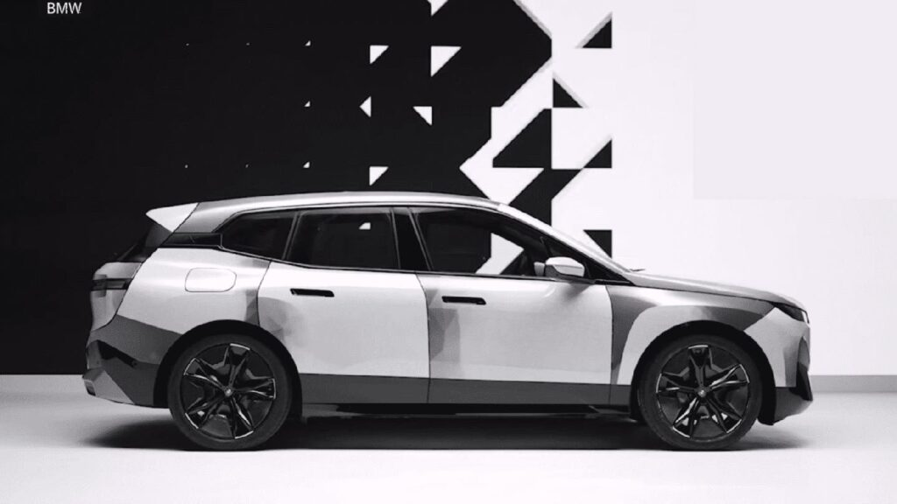

De coches voladores o con patas a láseres para matar mosquitos y robots que sirven vino o llevan el papel higiénico al baño. Son algunos de los inventos más curiosos presentados en las últimas ediciones del CES, la mayor feria de tecnología de consumo del mundo. Mientras que el año pasado el evento se celebró de forma exclusivamente virtual, en 2022 más de 2.300 empresas han mostrado entre el 5 y el 7 de enero en los hoteles y centros de convenciones de Las Vegas algunos de los dispositivos más innovadores y extravagantes del planeta.
